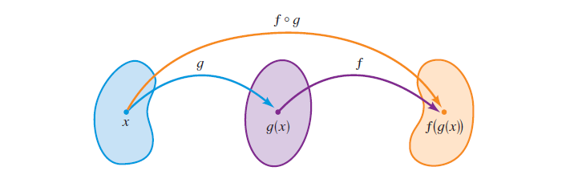
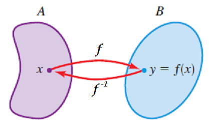

Matemáticas
Auditoría e Ingeniería en Control de Gestión
Contador Público y Auditor

Algebra de funciones
Sean \(f\) y \(g\) funciones con, \(Dom(f) = A\) y \(Dom(g) = B\). Entonces, las funciones \(f+g,~ f-g,~ f\cdot g\) y \(\dfrac{f}{g}\) están definidas como sigue
-
\(\displaystyle (f+g)(x) = f(x) + g(x) \qquad Dom(f+g) = A \cap B\)
-
\(\displaystyle (f-g)(x) = f(x) - g(x) \qquad Dom(f-g) = A \cap B\)
-
\(\displaystyle (f\cdot g)(x) = f(x) \cdot g(x) \qquad Dom(f\cdot g) = A \cap B\)
-
\(\displaystyle \left( \frac{f}{g} \right)(x) = \frac{f(x)}{g(x)} \qquad \qquad Dom \left( \frac{f}{g} \right) = \{ x \in A\cap B / g(x) \neq 0 \}\)
Considere las funciones \(\displaystyle f(x) = \frac{x}{x-2},~ g(x) = \sqrt{x+1}\).
-
Encontrar \((f+g)(1),~(f-g)(4),~(f\cdot g)(3),~\left(\dfrac{f}{g}\right)(0)\)
-
Determinar las siguientes funciones \(\displaystyle f, \, \, g, \, \, (f+g), \, \, (f-g), \, \, (f\cdot g), \, \, \left ( \frac{f}{g} \right )\) y sus dominios.
Composición de funciones
Podemos describir \((f\circ g)\) usando el siguiente diagrama

Composición de funciones
Dadas las funciones \(f(x) = 2x-1 , \, \, g(x) = \sqrt{x+1}, \, \, h(x) = \dfrac{x+1}{x-3}, \, \, l(x) = 3x^2+2\). Determinar las siguientes funciones
- \((f\circ g)(x)\)
- \((g\circ f)(x)\)
- \((f\circ h)(x)\)
- \((h\circ f)(x)\)
- \((g\circ h)(x)\)
- \((h\circ g)(x)\)
- \((f\circ l)(x)\)
- \((l\circ f)(x)\)
- \((g\circ l)(x)\)
- \((l\circ g)(x)\)
- \(((f\circ g)\circ h)(x)\)
- \(((h\circ l)\circ g)(x)\)
En general no es cierto que \(f \circ g = g \circ f\).
Respuestas de los ejemplos anteriores
\(f(x) = 2x-1 , \quad g(x) = \sqrt{x+1}, \quad h(x) = \dfrac{x+1}{x-3}, \quad l(x) = 3x^2+2\).
- \((f\circ g)(x) = 2\sqrt{x+1}-1\)
- \((g\circ f)(x) = \sqrt{2x}\)
- \((f\circ h)(x) = \dfrac{2(x+1)}{x-3} -1\)
- \((h\circ f)(x) = \dfrac{2x}{2x-4}\)
- \((g\circ h)(x) = \sqrt{\dfrac{x+1}{x-3} +1}\)
- \((h\circ g)(x)= \dfrac{\sqrt{x+1} +1}{\sqrt{x+1}-3}\)
- \((f\circ l)(x) = 6x^2+3\)
- \((l\circ f)(x) = 3(2x-1)^2 + 2\)
- \((g\circ l)(x) = \sqrt{3x^2+3}\)
- \((l\circ g)(x) = 3x+5\)
- \(((f\circ g)\circ h)(x) = 2\sqrt{\dfrac{x+1}{x-3}+1} - 1\)
- \(((h\circ l)\circ g)(x) = \dfrac{3x+6}{3x+2}\)
Ejercicios
1. Expresar las siguientes funciones, como una composición de dos o más funciones
-
\(\displaystyle h(x) = (3x+2)^4\)
-
\(\displaystyle h(x) = \sqrt{x^2+x-2}\)
-
\(\displaystyle h(x) = \frac{x+3}{(x+3)^2 +5}\)
-
\(\displaystyle h(x) = \sqrt[4]{x-2}\)
Función inversa
Sea \(f\) una función inyectiva con dominio \(A\) y recorrido \(B\). Entonces su función inversa \(f^{-1}\) tiene dominio \(B\) y recorrido \(A\), la cual está definida mediente la relación \[f^{-1}(y)=x \qquad \text{si y sólo si} \qquad f(x) = y\] para todo \(y\) en \(B\)

Función inversa
Sea \(f\) una función inyectiva tal que \(f(0) = 4, \quad f(1) = 7 , \quad f(2) = 1\), hallar \(f^{-1}(1), \quad f^{-1}(4), \quad f^{-1}(7)\)
Sea \(f\) una función inyectiva (uno a uno) con dominio \(A\) y recorrido \(B\). La función inversa \(f^{-1}\) satisface las siguientes propiedades
-
\[f^{-1}(f(x)) = x \qquad \text{para toda $x$ en $A$}\]
-
\[f(f^{-1}(y))= y \qquad \text{para toda $y$ en $B$}\]
Recíprocamente, cualquier función \(f^{-1}\) que satisface las dos propiedades anteriores es la inversa de \(f\).
Ejercicios
2. Probar que \(f(x) = x^3\) y \(g(x) = x^{1/3}\) son inversas entre si
¿Cómo hallar la inversa de una función inyectiva?
-
Escribir \(y=f(x)\)
-
Despejar \(x\) de la ecuación en términos de \(y\).
-
Intercambiar \(x\) e \(y\). La ecuación resultante es \(y = f^{-1}(x)\)
-
Hallar la inversa de la función \(f(x) = 2x -5\)
-
Sea \(\displaystyle f(x) = \frac{x-3}{2x+1}\) determinar dominio y recorrido de \(f\). Probar que \(f\) es inyectiva y encontrar \(f^{-1}(x)\)
Ejercicios
3. Un comerciante de café vende el kilo de café por $19.000. Los gastos mensuales son $450.000 más $8.500 por cada kilo de café vendido. Si \(x\) representa los kilos de café vendidos.
-
Escribir una función \(I(x)\) para el ingreso mensual total como una función del número de kilos de café vendidos.
-
Escribir una función \(C(x)\) para los gastos mensuales totales como una función del número de kilos de café vendidos.
-
Escribir una función \((I-C)(x)\) para la utilidad mensual total como una función del número de kilos de café vendidos.
Ejercicios
4. Un fabricante determina que el número total de unidades de producción por día, \(q\), es una función del número de empleados, \(m\), donde \[q = f(m) = \frac{40m-m^2}{4}\] El ingreso total, \(I\), que se recibe por la venta de \(q\) unidades, está dado por la función \(g\), donde \(I = g(q) = 40q\). Determinar \((g\circ f)(m)\). ¿Qué es lo que describe esta función compuesta?
Ejercicios
5. La ecuación de demanda de un producto está dada por \[p = f(q) = \frac{100}{q+5}\] donde \(p\) es el precio y \(q\) es la cantidad demandada. Encontrar \(f^{-1}\). ¿Qué representa esta función inversa?